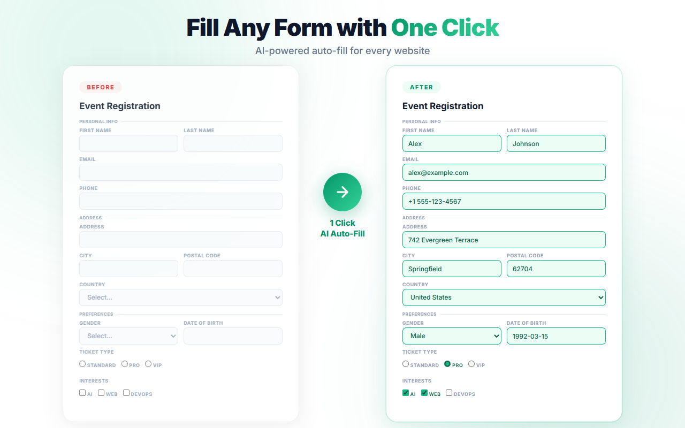

使い方ガイド
実際の画面で、FormPilotの使い方を解説します。
1 3ステップで自動入力
プロフィールを登録し、ボタンを押すだけ。たった3ステップでフォーム入力が完了します。

プロフィールを登録 — 「Profile」タブで名前・メール・住所などの情報を入力して保存します。最大10個のプロフィールを用途別に管理できます。
「AI Auto-Fill」をクリック — フォームのあるページで「Run」タブを開き、プロフィールを選択して「AI Auto-Fill」ボタンを押します。
入力完了 — AIがフォームの構造を解析し、すべてのフィールドに自動入力します。完了すると入力件数が表示されます。
「Skip already filled fields」にチェックを入れると、すでに値が入っているフィールドはスキップされます。
2 AIがプロフィールをフォームにマッピング
登録したプロフィール情報が、AIによってフォームの各フィールドに正確にマッピングされます。

色分けでわかるマッチング — Name（青）、Contact（紫）、Address（黄）、Other（緑）、Custom（ピンク）で、どの情報がどのフィールドに入力されたか一目でわかります。
カスタムフィールドも対応 — フリガナ・部署名・社員番号・SNSアカウントなど、標準項目にない項目もカスタムフィールドとして登録でき、AIが自動マッチングします（1プロフィールあたり最大20個）。
あらゆるフォームに対応 — テキスト入力・セレクトボックス・ラジオボタン・チェックボックス・日付入力など、あらゆる形式のフォームフィールドに対応しています。
3 ワンクリックでフォームが埋まる
空のフォームが、ボタン1つですべて入力済みになります。

Before — 名前・メール・住所・性別・チケット種別など、多数のフィールドがある空のフォーム。
After — 「AI Auto-Fill」をクリックするだけで、テキスト入力はもちろん、セレクトボックスやラジオボタン、チェックボックスまですべて自動入力されます。
個人情報はAIに送信されません。AIに送信されるのはフォームの構造情報（ラベルや属性）のみです。あなたの名前・住所・メールなどの個人データは一切外部に送られません。
4 フォームデータを保存して、いつでも復元
入力済みのフォームをサイトごとに保存。次回訪問時にワンクリックで復元できます。

Step 1: 保存 — フォームを入力した状態で「Save Current Form」をクリック。その時点の全フィールドの値がサイトごとに保存されます。
Step 2: 復元 — 同じサイトを再訪問したとき、保存済みエントリーの「Restore」をクリックするだけで、すべてのフィールドが復元されます。
1サイトあたり最大20件、最大50サイトまで保存できます。上限を超えると古いデータが自動削除されます。